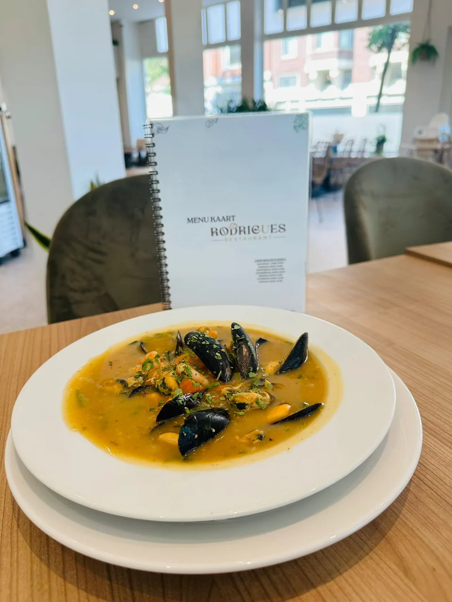
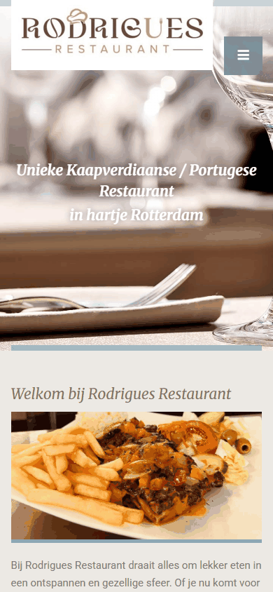

Lekker en mooi opgediend
Klanten schrijven dat het eten heerlijk is en dat de borden er mooi uitzien.

Restaurant aan de Mathenesserdijk in Delfshaven. Bacalhau, picanha, pastéis en sopa de marisco, voor lunch of diner. Ook afhalen of via Uber Eats.
4,7 uit 350 Google-reviewsMathenesserdijk 275A
Portugees en Nederlands, met prijzen. Blader door de tabbladen zoals je dat aan tafel doet.
Bel voor een tafel, stuur een appje met je vraag, of kom langs aan de Mathenesserdijk.
Kies wat je wilt vragen. WhatsApp opent met je bericht klaar; je tikt alleen nog op verzenden.
Aan: Rodrigues Restaurant · 06 43 78 14 43
Liever bellen? 06 43 78 14 43
Klanten schrijven dat het eten heerlijk is en dat de borden er mooi uitzien.
Klanten schrijven over vriendelijke, warme bediening, en noemen die soms zelfs bij naam.
Klanten schrijven over een fijne sfeer, ook bij een etentje met het team.
Een heel fijn restaurant: het eten was heerlijk en de sfeer is top.
Een heerlijke maaltijd, erg smaakvol en mooi opgediend.
Hier gegeten met een teamuitje: lekker eten en vriendelijk personeel.
Samengevat uit reviews op Google, niet letterlijk geciteerd.
Maandag is Rodrigues dicht. Dinsdag tot en met zondag open tot 22:00. Volgens de eigen site vanaf 15:00 op dinsdag, 16:00 op woensdag en 12:00 van donderdag tot en met zondag. Twijfel je? Bel even: 06 43 78 14 43.
Bel 06 43 78 14 43 of kijk op TheFork.
Afhalen kan aan de Mathenesserdijk 275A. Bezorgen gaat via Uber Eats.
Ja, op de kaart staat ontbijt en lunch van 12:00 tot 16:00: tosti's, broodjes zoals prego en bifana, en omeletten.
Volgens de kaart op woensdag, zaterdag en zondag. Er is ook een soep van de dag; vraag de bediening welke het vandaag is.
Ja, er is een kindermenu (onder meer kip, nuggets of bitoque met friet), met een bolletje ijs erbij.
Tijden volgens rodrigues-restaurant.nl. Andere sites noemen 10:00 als begintijd; bel bij twijfel even.
Bel voor een tafel, stuur een appje, of kom langs aan de Mathenesserdijk 275A.

Voorbeeld, geen belofte. Jullie kiezen de getallen; het gaat om omzet, niet om winst. (Ter vergelijking: hoofdgerechten op jullie kaart kosten € 18 tot € 30.)